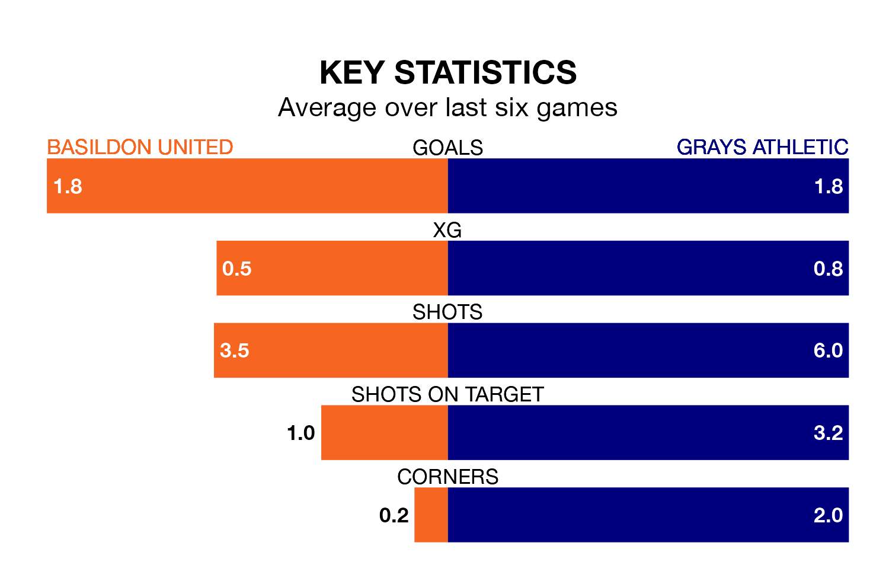

Grays Athletic travel to Basildon United on Saturday in the Isthmian League Division One North.
The visitors come into the game on the back of a defeat in their last match, having lost to New Salamis 3-2 away.
Basildon, meanwhile, won their last match, 4-0 against Witham Town.
With 30 goals in 23 games so far this season, Grays are scoring at below the league average rate with 1.3 goals per game. And they are conceding more than average, letting in 44 goals at a rate of 1.9 per game.
Basildon, meanwhile, are above average scorers, with 2.0 goals per game, compared to a league average of 1.7. They have conceded 1.5 goals per game.
Athletic are 17th in the table after 23 games, of which they have won four and drawn six, earning 18 points.
United are 10 places ahead of the visitors in seventh, with 12 wins and three draws putting them on 39 points.
In the last five years, Basildon and Grays have played each other on five occasions. Grays won two of them and they drew three times.
On average, Basildon scored 1.2 goals and Grays 3.0 in those matches.
Their last meeting was on November 10, when they played out a 1-1 draw.
The home team are in reasonable form in the Isthmian League Division One North, with four wins and two losses from their last six games.
With two wins and a draw over that period, Grays's form is worse – they have taken seven points from 18, compared to Basildon's 12.
Updated: 09:34 (UTC), 08/03/24